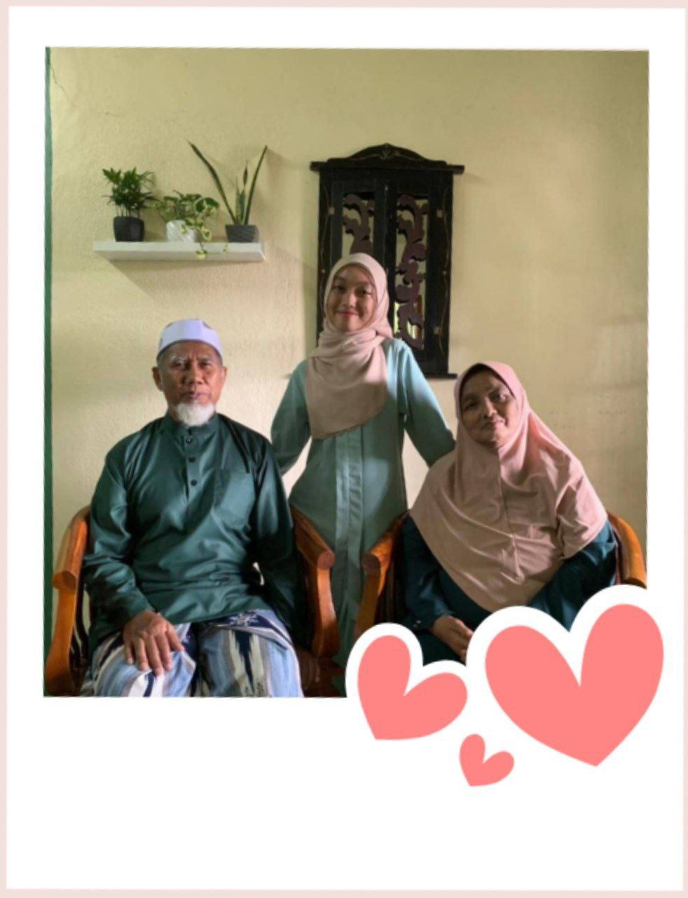
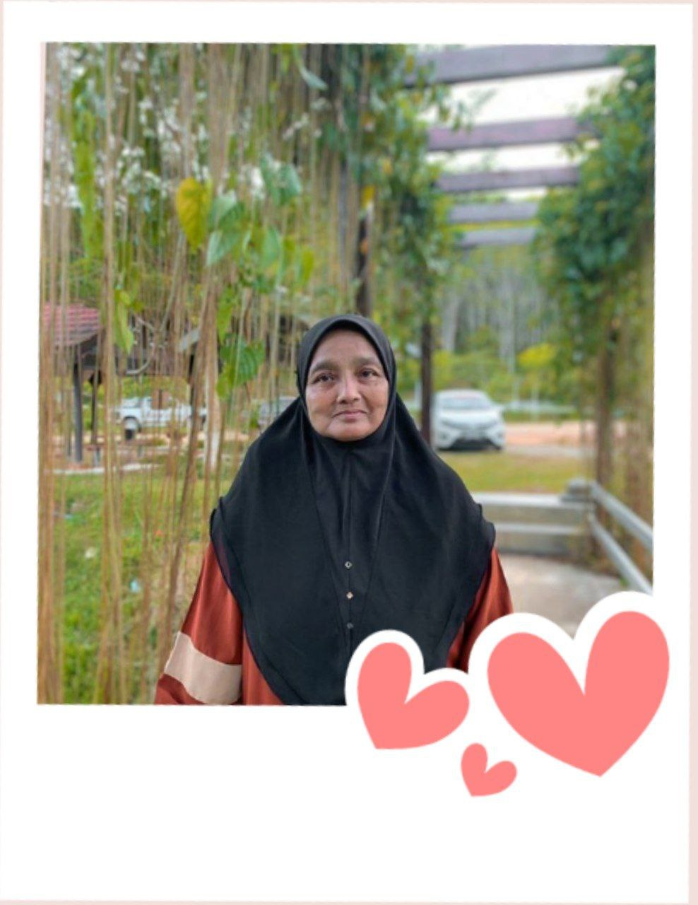
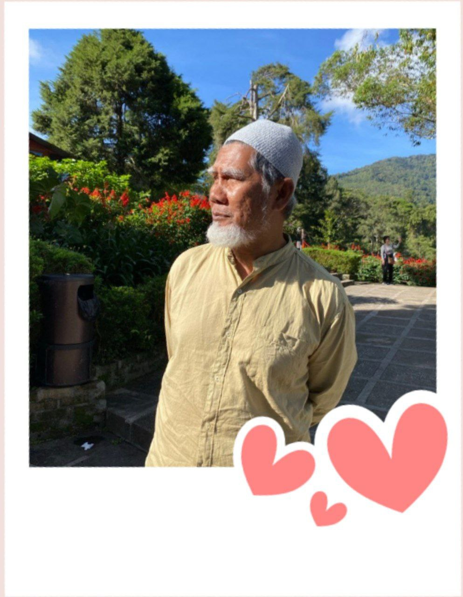
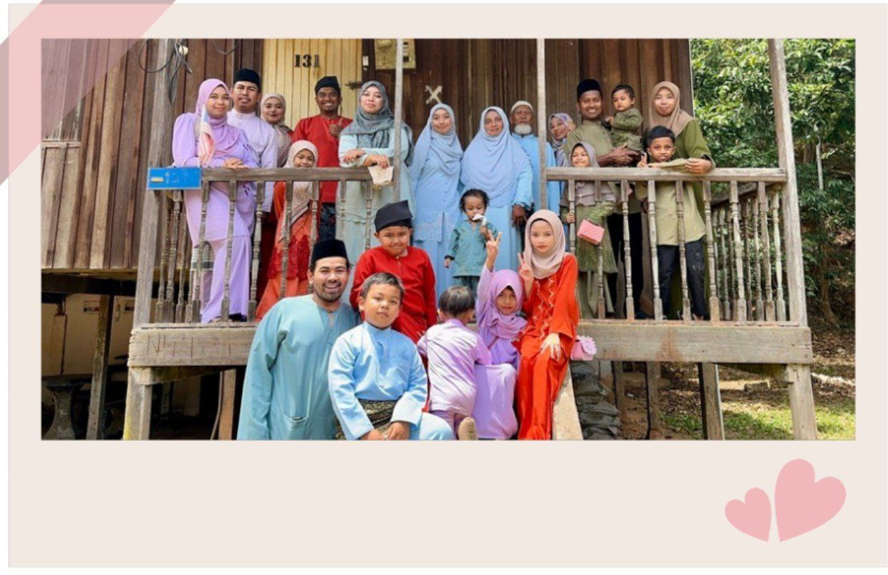

AboutFamily
MY FAMILY
-MY FATHER-
My father’s name is Zainol Bin Saad, and this year he is 64 years old. He is a retired police officer originally from Teluk Kumbar, Penang. Early in his career, he was stationed in Sarawak, where he lived for nearly 10 years before transferring to Gerik, Perak. Since then, Gerik has been his home.My father is firm in his decisions and stands by his principles. His bravery is undeniable, but behind that, he is also very supportive. What I admire most about him is his passion for learning. Even at the age of 60+, he continues to attend religious classes and is always eager to gain knowledge, making each day meaningful.
That’s my father — someone who truly inspires me and my family. 🥰
-MY MOTHER-
Let me introduce my amazing mom!
My mom, Zarinah binti Ahmad, has a name that also starts with the letter “Z,” just like my dad. It’s clear they are perfectly matched and meant to be together, hehe. This year, my mom is 60 years old and also comes from Teluk Kumbar, Penang—so, she’s from the same village as my dad, although they didn’t know each other back in school.My mom is a full-time homemaker, and one of the things I love most about her is her cooking skills. Every dish she makes is delicious! Besides that, my mom is very loving, though sometimes she can be a bit strict. She has a kind heart, speaks softly, and always supports me in every situation.
My mom is truly amazing, and I can’t put into words how precious she is!🧡
-MY SIBLINGS-
Let me share about my siblings! I have 6 siblings in total is 5 sisters and 1 brother. I’m the youngest, number 6, with 4 older sisters and 1 older brother. The age gap between me and my fifth sister is 8 years, so there’s quite a difference in age between us.
All of my siblings have their own careers, are married, and have families. Even though they have their own families, they still care about me. We have a very close bond, and my siblings are among the people who support me the most, along with my parents, in everything I do. They always encourage me and give advice.
Oh, and I also have 10 nieces and nephews! It gets pretty lively when we all gather together! 🤍😅
MY
SUPPORTIVE
FAMILY 💗
|

Love Beyond Measure 💕
"Parents:The first role models,the first teachers,and the first best friends"
|

The Queen of My World 💖
"A mother is the light in the darkness,the calming voice in the storm"
|

My Lifelong Hero 💗
"A father's legacy is not wealth or possessions-it's the lessons he leaves behind"
|
|

One Big Happy Family 🤍
"Having somewhere to go is home. Having someone to love is family. Having both is blessing"
(Click on family photo to read more about my siblings:)
|